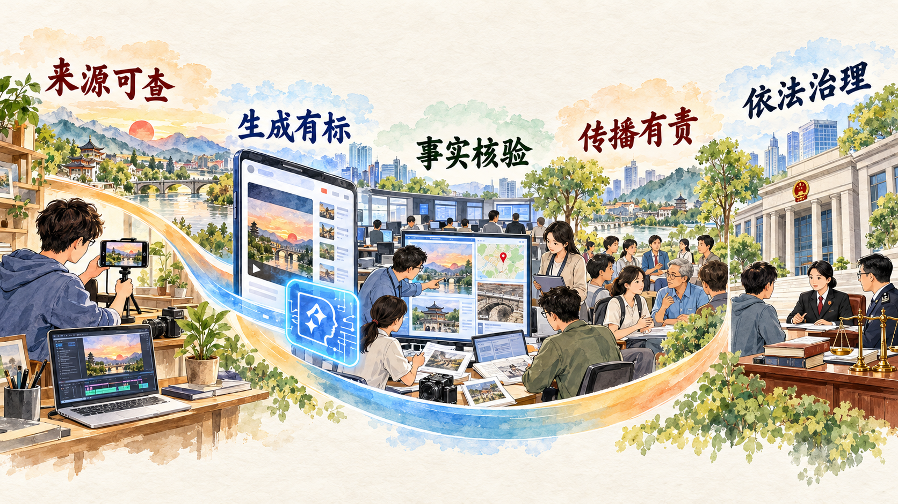

社会成员面对同一事件，可能接触不同信息、使用不同概念并形成不同判断。意识形态工作以共同思想基础凝聚社会共识，也为认识现实、辨别信息和确定行动方向提供理论坐标。本节从马克思主义指导地位、理论建设和主流舆论格局三个方面，观察思想引领进入社会生活的过程。
一、坚持马克思主义在意识形态领域指导地位的根本制度
马克思主义揭示人类社会发展规律，是我们立党立国、兴党兴国的根本指导思想。坚持马克思主义指导地位，保证文化建设和意识形态工作具有正确方向，也使人们能够从生产方式、社会关系和人民实践中理解现实问题。指导地位通过理论研究、学校教育、新闻传播、文化创作和公共政策等制度化环节得到落实。
思想文化生活具有多样性。坚持根本指导制度，为不同学科、不同艺术形式和不同社会观点的交流提供共同政治方向与价值基础。对于大学生而言，学习马克思主义的意义在于获得分析现实的立场、观点和方法，把网络上的零散信息放回历史条件、利益关系和社会结构中考察。
二、大力加强马克思主义理论建设
理论的生命力来自实践。马克思主义理论建设需要研究中国实践提出的新问题，把实践经验上升为规律性认识，再以理论成果指导新的实践。构建中国特色哲学社会科学学科体系、学术体系和话语体系，需要形成明确概念、严密论证和充分证据，也需要把宏大理论转化为青年能够进入和使用的解释框架。
理论传播同样需要内容创新和表达创新。课堂讲授、学术研究、新闻评论、文艺作品和数字平台可以承担不同任务：课堂建立系统知识，研究提供深入论证，新闻解释公共事件，文艺作品形成情感经验，数字平台扩大传播与互动。各类表达以准确的理论内容为基础，结合受众经验组织材料。
三、积极塑造主流舆论新格局
移动互联网使信息生产和传播速度大幅提高，普通用户也可以成为内容生产者。技术降低了表达门槛，同时增加来源判断、事实核验和责任识别的难度。主流舆论新格局需要权威信息及时发布、媒体深入核验、平台履行管理责任、内容生产者遵守规范、公众提高媒介素养，使真实、准确、负责任的内容获得有效传播。
案例研究｜真实地震中的 AI 假图传播链
2025 年 1 月，西藏日喀则定日县发生地震。灾情发生后，公众急切寻找震中现场、人员伤亡和救援进展。一张“男孩被压在废墟下”的图片开始出现在短视频和社交平台：画面中的孩子满脸灰尘，周围是断裂的墙体，配文把他同此次地震联系起来。真实灾情提供了具体时间和地点，强烈情绪画面提供了可迅速理解的故事，两者被拼接后形成了看似可信的“现场证据”。
图片在多个账号之间转发时，原始来源没有随之传播。一些账号重新裁剪画面、加上音乐和救援文字，把“地震发生”这一真实事实转化为“图片记录了震区男孩”这一未经证实的具体叙事。平台已经对多数转发内容显示 AI 生成提示，仍有用户在评论区询问孩子是否获救，也有人继续把图片转发为现场记录。一个显眼的提示面对情绪冲击时，需要用户主动停下来阅读并重新判断。
媒体核验首先把“事件真实”与“图片真实”分开。地震发生可以从中国地震台网、当地政府和权威媒体得到确认；图片是否来自现场，则需要寻找最早发布记录、拍摄者、时间地点和连续画面。核验人员还会观察不合常理的光影、肢体、建筑细节和图像纹理，并使用工具辅助识别。缺少原始发布者、图片无法对应具体救援地点、平台显示 AI 生成属性，多项线索共同表明画面不能作为此次灾情的事实证据。
AI 假图占用的不只是网络流量。救援阶段的公共注意力十分有限，虚假画面会分散对真实求助、物资需求和官方通报的关注，也可能损害公众对灾情信息的信任。平台下架或处置有关内容后，治理继续进入生成、发布和传播环节：生成服务提供者添加标识，发布者主动声明，平台核验标识并提示用户，媒体持续开展事实核查。
讨论题
- 真实灾情为什么会提高虚假现场图的可信度和传播速度？
- 一张图片带有“AI 生成”标识以后，事件真伪还需要核验哪些信息？
- 官方信息尚未完整发布时，普通用户、媒体和平台可以分别采取哪些行动？
资料来源：新华网转载广州日报《治理 AI 谣言如何“先人一招”？》，2025 年 1 月 10 日；新华网《整治 AI 技术滥用、打击 AI 谣言，这些案例值得警惕！》，2025 年 7 月 18 日。

新闻摘录｜AI 生成内容进入标识时代
2025 年 9 月 1 日，《人工智能生成合成内容标识办法》施行。用户看到一张图片、一段音频或一段视频时，识别内容是否经过 AI 生成，开始获得更明确的制度支持。标识制度把责任分布到内容形成和传播的多个环节。
服务提供者生成文本、图片、音频、视频或虚拟场景时，需要在内容周边添加用户能够感知的显式标识。显式标识可能表现为文字、图形、语音或交互提示，使普通用户在观看和收听时知道内容具有生成合成属性。文件元数据还要写入生成合成属性、服务提供者编码和内容编号等隐式信息，为平台识别、来源追踪和责任核验保留技术线索。
传播平台接收内容后，需要核验文件中的隐式标识。平台发现内容具有生成合成属性，或者用户声明内容由 AI 生成，应当在内容周边提示公众。用户发布生成合成内容时需要主动声明，并使用平台提供的标识功能；任何主体不得恶意删除、篡改、伪造或者隐匿标识。制度由此覆盖模型服务、内容发布、平台传播和用户接收的连续过程。
2025 年 11 月，网信部门公布一批执法案例。一些应用没有按照要求提供显式标识或隐式标识，被采取约谈、责令限期改正、下架等措施。制度执行使“谁生成、谁发布、平台怎样识别”形成可检查的责任接口，也为公众判断内容来源增加了第一道线索。
讨论题
- 显式标识和隐式标识分别面向普通用户、平台和监管解决什么问题？
- 一段视频带有 AI 标识以后，用户仍需核验哪些事实？
- 内容创作者、模型服务商和传播平台各自掌握哪些信息，因此承担哪些责任？
资料来源：国家互联网信息办公室《〈人工智能生成合成内容标识办法〉答记者问》，2025 年 3 月 14 日；国家互联网信息办公室有关执法通报，2025 年 11 月 25 日。
参考资料｜显式标识、隐式标识与内容溯源
显式标识直接面向内容接收者。一张 AI 图片角落的文字、一段合成视频播放时出现的提示，帮助用户在理解内容以前识别其生成属性。隐式标识写入文件元数据，普通观看界面通常不直接展示，平台和管理部门可以借此识别生成服务、内容编号和传播线索。
内容溯源还需要平台记录、账号信息、发布时间和原始文件共同支持。显式标识服务即时判断，隐式标识服务技术识别，传播记录服务过程核验。三类信息结合起来，可以重建内容从生成、编辑、发布到转发的路径，为事实核验和责任认定提供依据。
资料来源：《人工智能生成合成内容标识办法》及配套强制性国家标准有关说明。